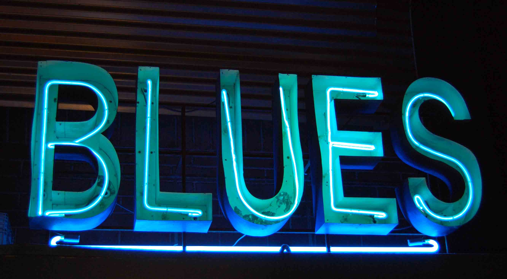

Blues

El Blues es un estilo musical vocal e instrumental, que fue basado en la utilización de notas de blues y de un patrón repetitivo, que suele seguir una estructura de doce compases. En Estados Unidos se desarrolló en las comunidades afroamericanas, a través de los espirituales, canciones de oración, canciones de trabajo, rimas inglesas, baladas escocesas e irlandesas narradas y gritos de campo entre otros. La utilización delas notas de blues y la importancia de los patrones de llamada y respuesta, tanto en su música como en las letras, son indicativos de la herencia africana-occidental de este estilo. El blues comenzó influyendo en la música popular estadounidense y occidental en general, llegando a formar parte de géneros musicales como el ragtime, jazz, bluegrass, rhythm and blues, rock and roll, hip-hop, la música country y canciones pop.
Página
Portada